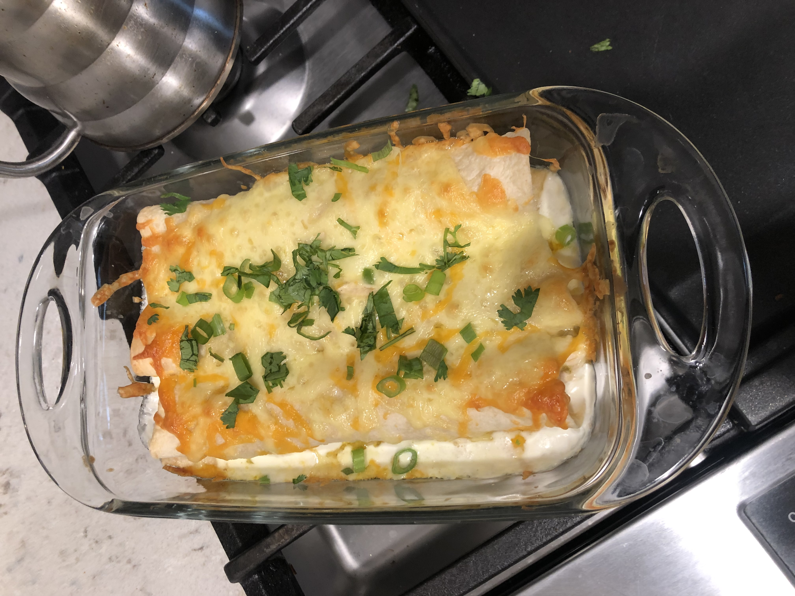
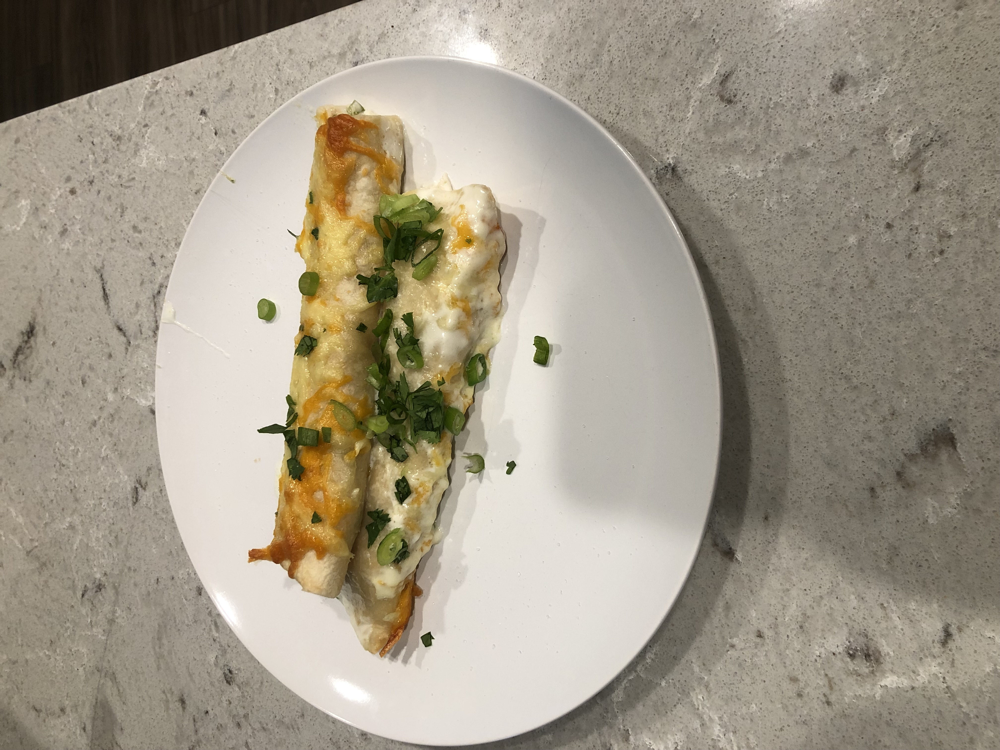

Rob's Chicken Enchilada Recipe
Ingredients:
- Shredded Chicken (1/2 rotisserie recommended)
- Flour Tortillas
- 1 Cup Heavy Cream
- 1/4 Cup of Chopped Shallot
- 2 Tablespoons of Olive Oil (or butter)
- 1/2 Cup of Monterey Jack Cheese (or Mexican blend)
- 1 Small Can of Chopped Green Chiles (7oz)
- 1 Green Onion (for garnish)
- Handful of Chopped Italian Parsley (for garnish)
- Salt and Pepper to Taste
Steps:
- Heat olive oil in saute pan on medium-low.
- Pour in shallots and chopped green chiles and saute for a few minutes until fragrant.
- Turn off heat and mix in shredded chicken.
- Add salt and pepper to taste.
- Spoon mixture into flour tortillas and roll up each one, placing each side-by-side in baking dish.
- After all rolled enchiladas are placed in baking pan, pour in heavy cream.
- Top with cheese and bake in pre-heated oven at 350 degrees for 20 minutes or until cheese melts and lightly browns.
- Remove from oven, add garnish and serve.

Dish after coming out of the oven.

Enchiladas on serving plate.